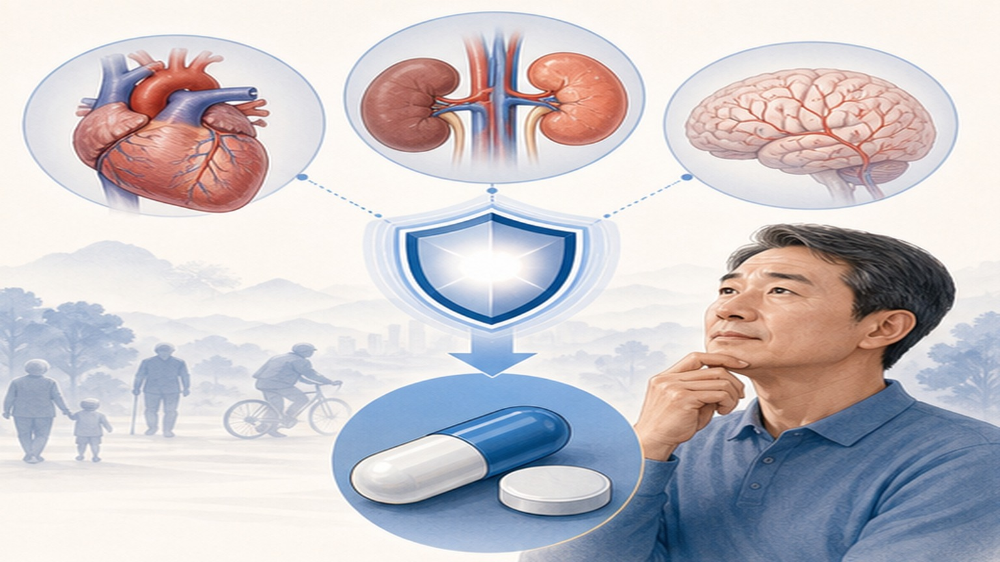
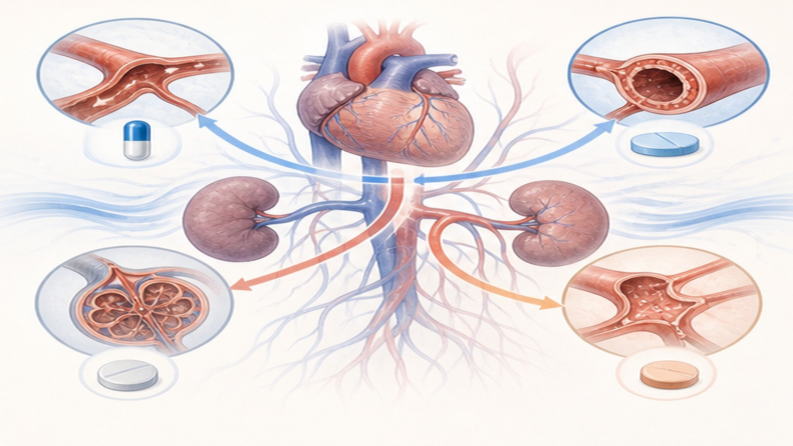

2025 AHA/ACC 고혈압 가이드라인,
목표 혈압 <130/80 mmHg 시대
모든 성인에 일관 적용 · 130-139/80-89 mmHg 저위험군도 3-6개월 생활습관 후 약물치료 권고 — SPRINT·STEP·중국 칼륨대체염 RCT 근거
2025 가이드라인 — 무엇이 달라졌나
2017년 분류는 유지하되, 약물치료 시작 기준이 더 빨라지고 가정혈압이 더 중요해졌습니다
(mmHg)
고혈압 유병률
후 약물치료 시작
혈압 분류 4단계 — 진료 액션 매트릭스
진료실 측정 ≥2회 평균 또는 가정 혈압 평균치 기준
가정혈압 측정 — 진료실보다 더 중요해졌습니다
새 가이드라인은 가정혈압 측정을 진단·치료 결정의 핵심 근거로 격상시켰습니다
정확한 가정혈압 측정법
- 측정 전 5분 안정 — 의자에 앉아 발 바닥에 평평히, 등 받침
- 아침·저녁 각 2회 — 1분 간격, 평균치 기록
- 커피·운동·흡연 30분 후 — 카페인·니코틴 영향 회피
- 팔 심장 높이 — 책상 위 팔 받침, 위팔 커프 사용
- 대화·휴대폰 금지 — 측정 중 침묵, 다리 꼬지 않기
1차 치료 — 생활습관 6가지
Life's Essential 8 — 가장 강력한 단일 인자는 체중·식이·운동의 조합
DASH 식이
채소·과일·통곡물·저지방 유제품 위주. 수축기 8-14 mmHg 감소 효과 입증.
저나트륨 (소금)
하루 <2,300 mg → 목표 1,500 mg. 한국 평균 3,300 mg의 절반 이하 수준.
고칼륨 식이
하루 3,500-5,000 mg. 바나나·시금치·고구마·콩. 중국 SSaSS 연구 사망 감소 입증.
체중 감량
1 kg 감량당 수축기 1 mmHg 감소. 비만 환자 가장 큰 효과.
중강도 유산소
주 150분 (걷기·자전거·수영). 수축기 4-9 mmHg 감소.
절주·금연·수면
음주 남 ≤2잔·여 ≤1잔/일. 금연 시 즉시 효과. 하루 7시간 수면.
약물치료 시작 시점 — 위험도 기준
PREVENT 10년 ASCVD 위험 ≥7.5%가 핵심 분기점
즉시 약물치료 시작
- 2기 고혈압 (≥140/90) — 위험도 무관 즉시 시작 (2가지 약 병용)
- 1기 + 고위험군 — ASCVD 위험 ≥7.5%, 당뇨, CKD, 65세+
- 임상적 ASCVD — 관상동맥질환, 뇌졸중, 말초혈관질환
- 심부전·LVH — 좌심실비대 동반 시 즉시 시작

1차 약물 4가지 계열
단일 약물보다 저용량 2가지 병용이 더 효과적·부작용 적음
ACEi / ARB
레닌-안지오텐신 차단. 당뇨·CKD·심부전 동반 시 우선. 마른기침(ACEi) 시 ARB로 전환.
CCB (칼슘차단제)
암로디핀 등. 흑인·노인 효과 우월. 발 부종·잇몸증식 주의. 흉통 동반 시 우선.
티아지드 이뇨제
클로르탈리돈·인다파미드. 저렴·효과적. K·요산 모니터. ALLHAT 1차 권장.
SPC (단일정 복합제)
ARB + CCB 또는 ARB + 이뇨제. 복용 순응도↑·혈압 조절률↑. 1차 권장.

진단·치료 흐름 4단계
고혈압 진단부터 안정 목표 도달까지의 표준 일정
진료실 ≥2회 + 가정혈압 1주 평균. 혈액·소변·심전도·PREVENT 위험.
DASH 식이·운동·체중 시작. 2기·고위험은 즉시 약물. 4주 후 재평가.
목표 미달 시 용량↑ 또는 2차 약물 추가. 부작용 점검.
목표 <130/80 도달 후 매 3-6개월 추적. 합병증·신기능 매년.
즉시 응급실 — 위험 신호 6가지
아래 증상은 응급 고혈압 또는 합병증 시작 신호 — 즉시 의료기관 방문
갑작스런 심한 두통
평소와 다른 강도, 구토 동반. 뇌출혈·고혈압성 뇌병증 가능성.
시야 흐림·복시
갑자기 한쪽 눈 시야 손상, 망막 부종 또는 망막혈관 손상 가능성.
흉통·호흡곤란
압박감 또는 쥐어짜는 통증, 식은땀 동반. 급성 관상동맥·심부전 의심.
팔·다리 한쪽 마비
말 어눌함, 안면 비대칭. 급성 뇌졸중 — FAST 원칙, 골든타임 4.5시간.
코피·요혈
압력 누르지 않는 코피, 소변 색 갈색·붉음. 표적 장기 손상 신호.
혈압 ≥180/120
2회 측정 모두 ≥180/120. 무증상이라도 즉시 진료 — 응급 고혈압.
한국 진료지침과의 간극 — 적용 시 고려
KSH 2023 vs 2025 AHA/ACC — 일반 환자 목표 차이를 함께 검토
주요 차이점
- 일반 성인 목표 — KSH 2023 <140/90 vs AHA/ACC 2025 <130/80
- 고위험군 목표 — 양쪽 모두 <130/80 (일치)
- 1기 시작 시점 — KSH 6-12개월 후 vs AHA 3-6개월 후
- 한국인 특성 — 짠 음식 섭취·신부전 동반 비율 높음
환자 실천 체크리스트 7가지
진단 직후부터 시작할 수 있는 구체적 행동
가정혈압 매일 아침·저녁 2회씩
5분 안정 후 1분 간격 2회 측정. 평균치 기록. 진료 시 1주 기록 지참.
소금 줄이기 (2,300 mg/일 이하)
국·찌개 국물 줄이기, 라면·즉석식 피하기. 영양정보 라벨 확인 습관.
칼륨 식품 늘리기
바나나·시금치·고구마·콩·아보카도. 신부전 환자는 제한 — 의사 확인.
주 150분 빠르게 걷기
하루 30분 × 5일. 식후 산책 더하면 혈압 조절·체중 모두 개선.
약 거르지 않기·시간 고정
매일 같은 시간 복용. 잊었을 때 12시간 이내면 바로, 이후면 다음 시간.
절주·금연 시작
음주 남 ≤2잔·여 ≤1잔/일. 금연은 즉시 — 시작 1년 내 효과 큼.
3-6개월마다 재검
혈압·신기능·전해질·소변 알부민 추적. 합병증 매년 종합 평가.
혈압 조절은 평생 함께하는 길
오늘 작은 변화 — 30년 후 더 건강한 심장
가정혈압 기록·식이·운동·약물을 함께 점검합니다 — 궁금한 점은 언제든 문의해 주세요
광교중앙로 298, 4층
토요일 08:30~13:30
같은 자료를 다시 볼 수 있어요